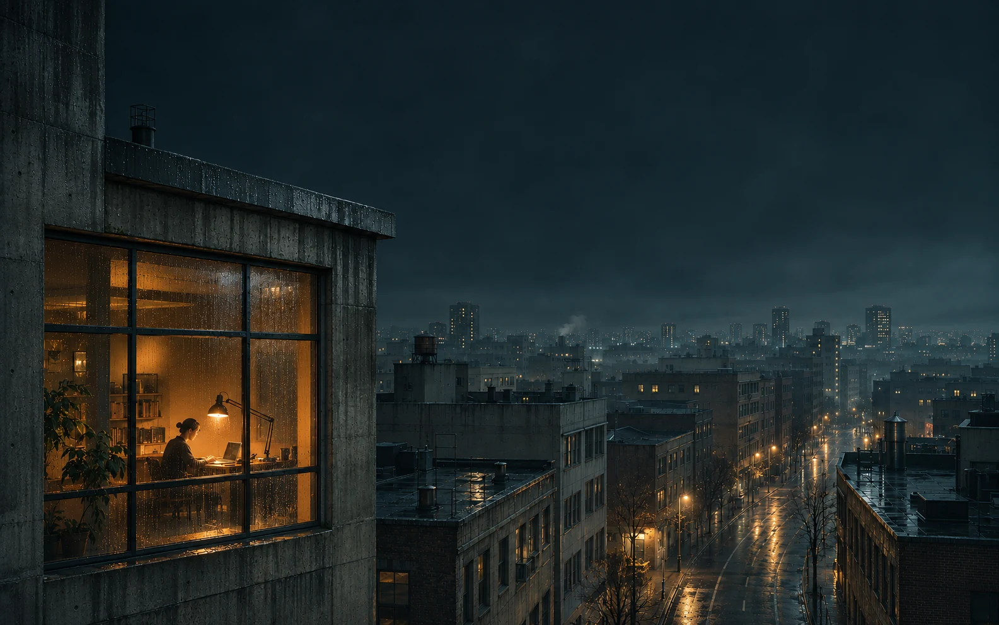
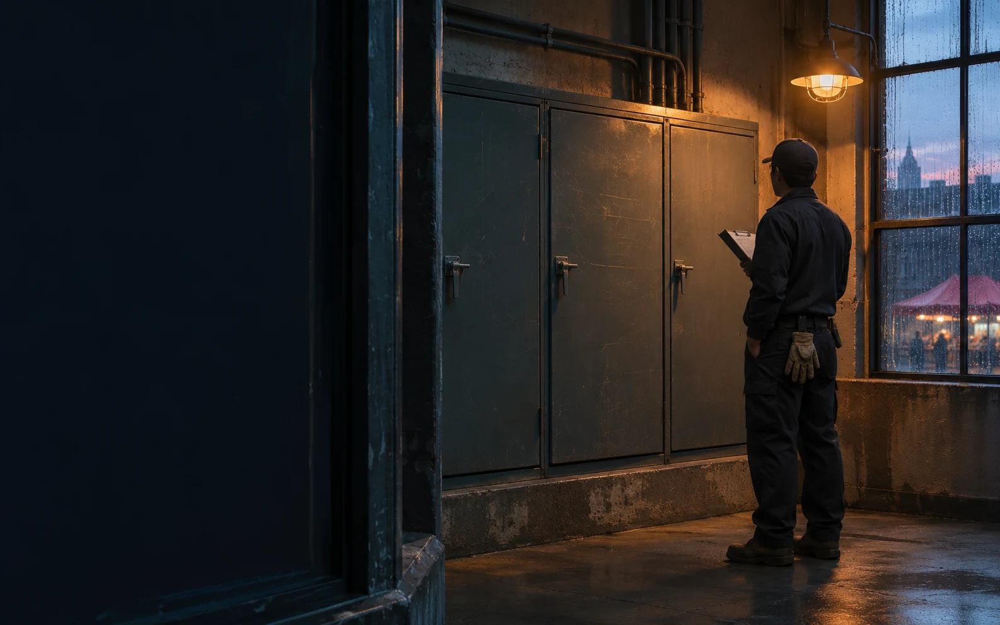
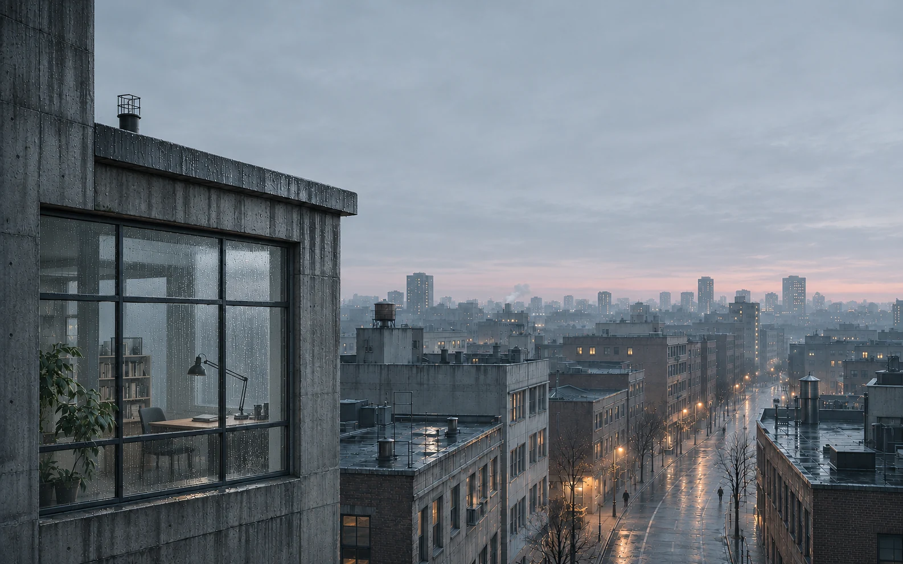

An imagined night in Meridian City. All places, people and times are fictional narrative markers. This edition contains the complete story and every editorial interaction outcome, without JavaScript, sound or animation.
01 / One Light Left On00:07 · fictional time
Someone is still awake.
One warm window is enough to reveal how many stories continue after dark.

One room, still awake in an imagined city.
A room within the night
Most windows have gone dark. Behind this pane, a steady lamp and a small human silhouette hold the night a little longer.
02 / A Night of Many Routes00:42 · fictional time
Different places. One night.
No single room directs this city’s care. Many people begin before the rest of us notice.
A Night of Many Routes
Choose a point of light
Follow one route to a place and a purpose. The other lights remain: separate tasks, sharing the same hours.
03 / Before the Bread01:18 · fictional time
The first loaf starts in darkness.
Long before a street smells of bread, a pair of hands has prepared the morning.
Before preparation — hands work the flour into the dough.After preparation — the first dough portions are arranged.
A place for the first bake
Flour catches in the grain of the bench. Beside the warm oven edge, dough and tools are arranged for the work ahead.
04 / The Quiet Corridor01:56 · fictional time
Care has no closing hour.
In the gentlest rooms, small acts can carry the weight of an entire night.
The Quiet Corridor
Attention takes small forms
A glass of water. A blanket folded within reach. The quiet station holds these preparations without revealing the people they are for.
05 / A Clean Start02:34 · fictional time
Morning has to be made.
A careful sweep changes the ground that thousands of footsteps will soon cross.
Before — leaves and grit interrupt the street edge.After — the same curb, with leaves and grit removed.
The same curb, after the work
Leaves and grit give way to a clear street edge. The reflection was here all along; the changed ground makes it easier to see.
06 / Between Trains03:10 · fictional time
The interval belongs to the workers.
A quiet line is a chance to inspect what daily motion wears away.
Between Trains
An exercise in looking closely
The long view gives way to a fastener, a sleeper, the material between them. In the distance, the brightest point is a work light.
07 / Water Below03:46 · fictional time
The city carries water in silence.
Beyond the road lies a network of rooms and pipes maintained by human attention.
Water Below
The room behind the ordinary
Brackets hold the weight of a curved pipe. Further along the gallery, a worker pauses over a notebook. The morning above will give little sign of this room.
08 / Light on Duty04:22 · fictional time
Continuity is a kind of care.
Even a steady streetlamp has a story of inspection behind it.

Light on Duty
A familiar light, still there
A task lamp rests above closed equipment. Beyond a pane of glass, another warm light waits over the market. Each belongs to its own place in the night.
09 / Before the Market Opens05:08 · fictional time
Color arrives by hand.
Every stem and crate has been moved before the first conversation begins.
Night — loose stems are still being sorted.First light — the first crates are arranged for opening.
The first color of the morning
Hands gather stems into a scuffed crate. Petals catch the light at their edges, while the pale opening at the end of the aisle grows clearer.
10 / First Service05:43 · fictional time
The first passengers arrive.
The platform fills slowly with the work of a city already in motion.
Before service — the platform is ready.First service — a door opens onto the morning.
For someone, the day begins here
A prepared vehicle enters the frame. A door opens, and the first passengers arrive in a city whose morning has already been taking shape.
11 / The City Is Awake06:12 · fictional time
By morning, the traces remain.
The city appears ordinary because so much happened while it was quiet.

The City Is Awake
The window is still there
Now it belongs to the day. Look again at six small traces of the night, or return to the people and places that prepared them.